CS 184: Computer Graphics and Imaging, Summer 2025
Project 3-1: Path Tracer
Yuhe Qin & Henry Michaelson
Website URL: https://cal-cs184.github.io/hw-webpages-yuhe-henry-webpage/hw3/index.html
Github URL: https://github.com/cal-cs184/hw-pathtracer-updated-yuhe-henry-ray-trace

|
Acknowledgement of AI
- ChatGPT was used in this assignment primarily as an assistant to help debug code. We had several bugs in
our implementation that in total we
struggled for 20+ hours on. ChatGPT was used in this process to help us whittle down and identify said
bugs. It should be noted that ChatGPT was useful in some cases but also was extremely unhelpful in other
cases. However, on the whole it was very useful to consult as a resource to understand which piece of
the codebase the bugs likely came from. We will list the key bugs below and share how ChatGPT assisted
in each. Additionally, ChatGPT was useful in helping us settle on our initial implementation of using
barycentric coordinates for the triangle intersection test needed to compute ray<>triangle intersection.
- Incorrect normal vector calculation for triangle and circle primitives: Initially, we did not normalize our computed normal vectors. We did not notice this bug until much later on in the assignment as our initial images looked like those in the assignment. We first noticed that something was incorrect when we were rendering the dragon for task 3. The base of the pedestal in our image looked wavy and did not match the reference image that was provided. However, given that we did not find this until task 3, we did not know where the issue came from and this took quite some time to identify that said issue was due to improper normal vector calculation. ChatGPT was helpful in helping us figure out that the wavy shadow pattern was most likely an issue with mapping primitive normal vectors. This led us to the primitive classes and voila that solved it!
- Triangle test guidance: In this assignment we needed to write an algorithm to see if a ray intersected with a triangle on the screen. Initially we went down a rabbit hole of trying to compute three separate line tests for each of the triangles edges. However, this proved difficult, especially as this triangle was in 3D space and our previous implementation of the line test was for measuring triangle intersections in 2D. We asked ChatGPT for help identifying different approaches and one of its suggestions was to use barycentric coordinates. That idea immediately clicked with us, and we ended up using the approach that it suggested to compute the barycentric coordinates for the triangle intersection test. ChatGPT provided the code that we referenced to compute u, w, and v from the three triangle edge vectors.
- Several bugs in constructing the BBox and BVH data structures: We had a few critical bugs when we built the BVH and BBox acceleration structure. Firstly, in the BBox intersection method we did not account for the ray being negative. In this case we needed to switch the min and max t values (as t will decrease as it travels through space). We overlooked this and saw that our images failed to render. ChatGPT was very helpful here to quickly pinpoint this issue. It then generated a consolidated implementation that we temporarily used. We later rewrote our original implementation to account for negative rays and used that in the final solution. Our next issue was with the construction of the BVH, as our original implementation for partitioning data elements into a left and right sublist did not work and caused segfaults. We then used ChatGPT for help with a scheme to separate a list into left and right sublist. It suggested that we use a partitioning scheme that did yield correct results when rendering the task 2 images. However, we later learned after many hours of debugging that said scheme did not fully work. While the BVH was able to produce correct looking results, it was not fast enough. We initially assumed that our implementation (about 3x slower than the reference solution) was in the right ballpark and that our render times would improve on the instructional machines. However, in later stages of the rendering pipeline, our solution became far too slow, even on instructional machines. As we initially skipped over this issue, we ended up looking for the root cause of our slowness in all of the wrong places. We used ChatGPT for help in this debugging exercise, but it was not helpful and pointed down a bunch of dead ends. We did incorporate a few of its suggestions which did help in shaving off some time from the BVH traversal time, however, they did not solve the core issue, we were still far too slow. Finally, we decided to print out the spits of the iterators of the BVH boxes and noticed that they did not look as expected. This identified our issue and we were able to come up with a correct splitting method. After this was all said and done we had a very fast BVH algorithm.
- Floating point issues: In addition to our slow rendering times (as described above), we
also had issues with our images being subtly and inexplicably darker than the reference images.
We saw that
total light was increasing as the number of bounces increased, however, at each step, our image
was darker than the reference image. Additionally, our adaptive sampling implementation was
showing that we needed far too many samples. We asked ChatGPT for help in solving this issue and
it did suggest
that floating point issues may be to blame, however, its suggestions were not correct and caused
us to go on a wild goose chase that lasted hours. Finally, we were able to solve the problem
after making a private Ed post and after rereading the instruction document and using
min_t=EPS_Fas described in the implementation details. For this bug, ChatGPT was useful in identifying the higher level issue (i.e. floating point inconsistencies), however, it was very unhelpful as it led us down a bunch of incorrect paths before we noticed the proper solution in the implementation details section. - In addition to code-level debugging, we also ChatGPT to help with several Git-related issues that came up throughout the development process. These included version rollback, branch synchronization, and merge conflict resolution. ChatGPT’s guidance helped us avoid accidental loss of work and maintain a clean collaboration workflow.
- ChatGPT also provided feedback on our rendered images — especially when our solutions looked wrong in Task 4 and Task 5.
- Finally, one of our team members is not a native English speaker, and ChatGPT was used to polish and refine the grammar and fluency of the write-up.
- Additionally, ChatGPT was used to help style this HTML write up and make it more visually appealing than the default template that given to us.
Overview
In this assignment we took a quantum leap in our ability to render objects that look realistic. Up until
this point, we have learned how to represent and render geometrically complex objects, however, our
understanding of shading has been fairly shallow. Prior to path tracing, we had a very simple method of
approximating lighting (the Blinn Phong lighting method). This method was okay at capturing direct
relationships between objects, viewers, and light sources, but could not adequately capture indirect
lighting
in which light is scattered and reflected off of objects to create a field of illumination. As we see in
this
assignment, indirect lighting is absolutely critical in creating a photorealistic final product.
Here are the steps that we followed to simulate the transport of light:
- In the first task, we built a simple engine to create many sampled rays of light for each pixel and cast them out into a scene to have said rays interact with objects in the scene. We would then measure which object the ray first hit and use said data to determine what should be displayed in each pixel.
- In the second task, we implemented a data structure, a bounding volume hierarchy (BVH) tree to decrease the amount of computation required to figure out which primary object a given ray of light hit. This data structure is required to render more complicated scenes as the prior method grew vastly more complex as the number of primitives in the scene increased.
- After the first two tasks we were able to generate images via casting many rays into a scene. However, we were not able to create photorealistic images. In order to do that, we had to estimate the light transport between objects in the scene. We implemented the core functionality to do this in the third task.
- Now that we were able to transport light from object to object, we needed to write the main recursive function to simulate global illumination. We did this in the fourth task and had to simulate successive bounces of light to represent color bleeding and rubbing off between objects in the scene. This is the critical step in photorealistic rendering as indirect light transport creates the lighting effects that we see in the real world. As this is very computationally intensive and its load grows with each successive light bounce, we implemented the russian roulette strategy to randomly terminate some light rays after a number of bounces.
- Lastly, in task six we implemented a smarter sampling technique to stop sampling pixels if their value is converged (i.e. the existing samples have similar values). In this event, successive sampling is not going to tell us much about the pixels final value and we do not need to waste computational resources on it.
Part 1: Ray Generation and Scene Intersection
- For this task we had to generate rays which we would send out first into the camera space and then into the world space of a given image. To generate the ray we first had to convert from normalized image coordinates from (0,0) to (1,1) to camera coordinates. The camera coordinates were determined by the field of view. We had to determine the new min and max x and y coordinates and treat our mapping like a linear interpolation between the max and min coordinates in both x and y dimensions. After this, we were provided with a matrix which represented the transformation from camera to world coordinates. We multiplied our newly created camera coordinates by said matrix and normalized our result to get our final ray. Lastly, we set the rays min and max t values to correspond to the near and far clipping planes of the image as nothing before the near plane would be shown and nothing after the far plane would be displayed. Therefore, these two planes defined the boundary that we needed to render inside of.
- Now that we could generate a ray and project it into the world space, we needed to build the method that would iterate through each pixel in the screen and would create multiple rays corresponding to the number of samples that we wanted to use in rendering said image. We then needed to call est_radiance_global_illumination to estimate the light transport happening for each ray. We then needed to average over each ray sample to get our final pixel value to display on the screen.
- In order to measure a ray's radiance, we needed to know the first object that each ray hit
in the scene.
This object's radiance in the direction of the camera is what we should see for a given pixel. This
required us to write intersection functions to determine two things. First we had to determine if a ray
and an object intersected. Then we had to determine what was the closest object that intersected with
the ray.
- We started with implementing the triangle intersection algorithm. The first step was to ensure that the triangle was front facing and that the ray intersected with the triangle's plane. We did that by taking the dot product between the ray vector and the normal vector for the triangle. If the dot product was zero, then we knew that the ray was parallel to said triangle and never intersected. Additionally, if the dot product was positive, then the ray (which traced into the screen) was facing the same direction as the triangle. This meant that our triangle was back-facing. After this point we calculated the t-value which corresponded to when the ray intersected with the triangle's plane. If this t-value was not in the valid range, then we knew that these two objects did not intersect in the necessary range and could return. At this point, we knew the point at which the ray intersected with the triangle's plane, but needed to know if said point was inside of the triangle. We began by trying to use an approach similar to that of our first assignment for this course where we checked if a given point (i.e. where the ray intersected with the triangle plane) was on the triangle-facing side of each edge. However, in the first assignment, we were working with 2D points and these calculations did not work out easily in 3D. We then settled on a barycentric approach to see how much of each vertice the point contained. We know that a point is in the triangle if and only if each barycentric coordinate is greater than or equal to zero. If any coordinate is less than zero, then the point lies past the edge opposite the vertex and is therefore outside of the triangle. As noted in the AI acknowledgement at the top of this writeup, ChatGPT was useful in guiding us towards using barycentric coordinates and we did reference its solution for the barycentric calculation that we used in our solution. We used said barycentric coordinates to calculate the normal vector at the intersection point.
- We also implemented sphere intersection which was much simpler. Spheres have a nice property where a ray will intersect with said sphere if it passes by at a distance less than the radius of the sphere. In class we derived the equation to calculate the value of t where a ray would intersect with said sphere. This value must be a real number contained within the ray's max and min t-values.
-
Task 1: Diffuse BSDF
The BSDF used in both direct lighting approaches is typically a diffuse (Lambertian) model. This model assumes light is reflected evenly in all directions and returns a constant value:
\( f = \frac{\rho}{\pi} \), where \( \rho \) is the surface reflectance (color).This formulation ensures energy conservation and provides a simple and efficient way to simulate matte surfaces under lighting. -
Task 2: Zero-Bounce Illumination
When a ray hits a surface, the very first light contribution comes from emitted radiance at the surface itself — known as "zero-bounce" lighting. If the surface is emissive (e.g., a light source), we return its emission value:
\( L_{\text{emit}} \) if emissive, otherwise \( L_{\text{emit}} = 0 \).This ensures that primary rays (e.g., camera rays) can directly see lights in the scene.
-
Task 3: Direct Lighting via Uniform Hemisphere Sampling
In this method, we estimate direct lighting by uniformly sampling directions across the hemisphere centered at the surface normal:- Sample a direction \( \omega_i \) uniformly in local space.
- Transform it to world space and cast a shadow ray toward that direction.
- If the ray hits a light:
- Evaluate BSDF: \( f(\omega_o, \omega_i) \), where \( \omega_o \) is the outgoing direction.
- Multiply by the light's emission and \( \cos(\theta) \).
- Repeat over many samples and scale by the hemisphere PDF: \( \frac{1}{2\pi} \).
-
Task 4: Direct Lighting via Importance Sampling of Lights
Instead of sampling all directions equally, this approach samples directions toward light sources directly, reducing noise and improving efficiency:- Iterate through all lights in the scene.
- For each light:
- Sample a direction \( \omega_i \) toward the light and get incoming radiance and PDF.
- Cast a shadow ray to check if the light is visible (unoccluded).
- If visible:
- Evaluate BSDF: \( f(\omega_o, \omega_i) \).
- Multiply by \( L_i \cdot \cos(\theta) \) and divide by PDF.
- Average multiple samples for area lights; no averaging for delta lights.
-
Summary of Logic
- Zero-bounce: handles emissive surfaces seen directly by the camera.
- Uniform sampling: evenly samples all directions, but can be noisy.
- Importance sampling: samples toward actual lights, reducing noise significantly.
- Both rely on BSDF evaluation and cosine weighting for physically-based lighting.
-
1. Sampling with Diffuse BSDF
When a surface is hit by a ray, we simulate light reflection by sampling an incoming direction from the BSDF — typically a diffuse (Lambertian) model.- A local coordinate frame is constructed at the intersection point, aligned with the surface normal.
- The outgoing direction \( \omega_o \) (toward the camera) is transformed into this local frame.
- We use importance sampling on the BSDF to generate an incoming direction \( \omega_i \).
- This sampled direction is transformed back to world space.
- A new bounce ray is cast from the intersection point along this direction.
- The BSDF value, cosine term, and sample PDF are used to weight the incoming radiance from this new direction.
-
2. Global Illumination with up to N Bounces
To simulate global illumination, we recursively trace light paths for multiple bounces beyond the first surface interaction.- Each time a ray intersects a surface, we first compute direct lighting.
- If the ray’s remaining depth allows, we sample the BSDF to spawn a new indirect bounce ray.
- This new ray is traced into the scene, and if it hits a surface, we repeat the process with reduced depth.
- If the ray misses all geometry, the environment light contributes the remaining radiance.
- The resulting radiance is scaled by the BSDF term, \( \cos(\theta) \), and the inverse of the sample PDF.
- Depending on whether accumulated bounces are enabled, this indirect result is either added to or replaces the direct component.
-
3. Global Illumination with Russian Roulette
Russian Roulette is used to probabilistically terminate ray paths to reduce unnecessary computation while preserving correctness.- After a certain bounce depth (typically after 2), each ray path may randomly terminate with some probability.
- This reduces overhead from deep bounces that contribute little to the image.
- If the path is terminated, we return the accumulated radiance so far.
- If it survives, we continue tracing and divide the new contribution by the survival probability.
- This correction ensures unbiased energy conservation, as surviving rays represent a larger portion of the light energy.
- The combination of BSDF sampling, recursive indirect bounces, and Russian Roulette allows our path tracer to simulate realistic global illumination — including soft indirect shadows, color bleeding, and complex multi-bounce interactions — both efficiently and physically accurately.
- Depth Threshold: We activate Russian Roulette only after a certain recursion depth
(e.g.,
r.depth > 1) to ensure that at least some indirect light is always computed. - Continuation Probability: A random decision is made using a pre-defined probability
(e.g., 65% to continue). This is implemented via
coin_flip(termination_prob). - Energy Scaling: When a ray survives termination, its contribution is scaled by \( \frac{1}{\text{continuation\_prob}} \), ensuring that the overall Monte Carlo estimate remains unbiased despite fewer samples.
-
Adaptive sampling is a technique to improve rendering efficiency by early
termination of pixel sampling when results are statistically stable.
- Instead of taking a fixed number of samples per pixel, we compute the mean and variance of illuminance as we accumulate samples.
- Flat, low-variance areas can stop early, while noisy regions (e.g. shadow edges) continue sampling.
-
This logic is implemented in the
raytrace_pixel()function, which traces and estimates lighting for one pixel at a time.-
For each pixel, we initialize two scalar accumulators:
s1: sum of illuminance (brightness)s2: sum of squared illuminance
-
We take samples in batches (defined by
samplesPerBatch), using jittered subpixel positions to avoid aliasing. -
For each sample:
- Generate a ray through the pixel with random subpixel offset.
- Estimate global illumination using path tracing.
- Accumulate both the RGB radiance and scalar illuminance.
-
For each pixel, we initialize two scalar accumulators:
-
After each batch, if enough samples have been taken, we calculate:
- Mean: \( \text{mean} = \frac{s_1}{N} \)
- Variance: \( \text{var} = \frac{s_2 - \frac{s_1^2}{N}}{N - 1} \)
-
A 95% confidence interval is computed for convergence:
- \( I = 1.96 \times \sqrt{\frac{\text{var}}{N}} \)
- If \( I \leq \text{maxTolerance} \times \text{mean} \), we stop early since the estimate is stable.
-
Once finished (either by convergence or max samples), we:
- Compute the final radiance as the average of all RGB samples.
- Write the result into the sample buffer.
- Store the number of samples taken for visualization (e.g., rate image).
- Summary: Adaptive sampling helps allocate computation where it's most needed — noisy areas get more samples, flat regions get fewer — reducing total render time while maintaining visual quality.
- Task 4 – Precision issues causing dark output: We noticed that our rendered image
for Task 4 appeared significantly darker than the reference image, despite our implementation being
otherwise correct. After consulting documentation and verifying with others, we discovered the issue was
due to precision errors in the shadow ray's range. Specifically, we had not properly offset the shadow
ray’s min and max t values to avoid self-intersections and ensure accurate visibility testing. After
modifying our code to:
the lighting result was corrected, and the rendered image matched the expected output. ChatGPT was useful in confirming that our issue was most likely a floating point issue.Ray shadow_ray(hit_p, wi_world); shadow_ray.min_t = EPS_F; shadow_ray.max_t = distToLight - EPS_F; - Task 5 – Incorrect coloring and missing ceiling rays due to Russian Roulette: In
Task 5, we found that our rendered image had overly green tints and failed to properly trace rays
bouncing off the ceiling. After consulting with the TA and experimenting based on their advice, we
discovered the issue was caused by prematurely terminating paths via Russian Roulette. By disabling RR
in our implementation (i.e., setting
cpdf = 1.0to always continue the path), we were able to render correct ceiling bounces and significantly improve color accuracy. While ChatGPT was not directly involved in this fix, it helped us explore other RR-related debug ideas before the TA's insight ultimately resolved it.
Here are some images that we rendered showing normal shading
|
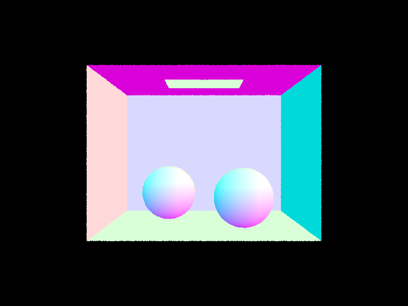
|
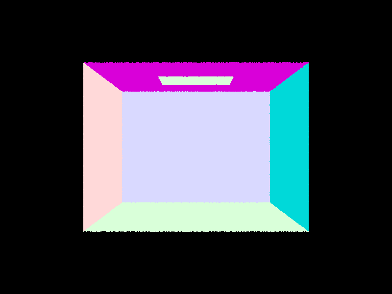
|
|
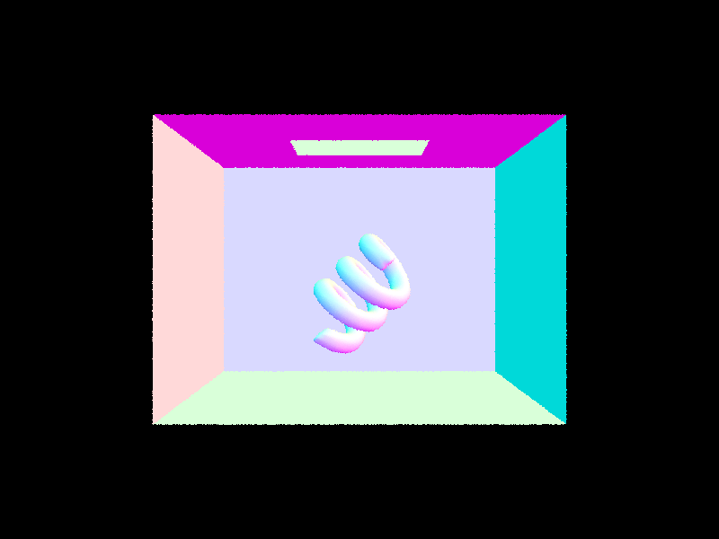
|
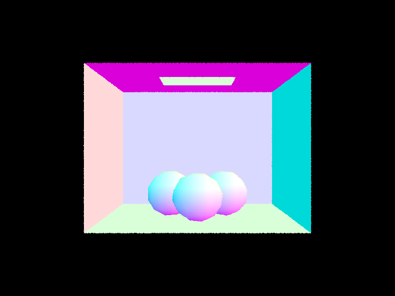
|
|
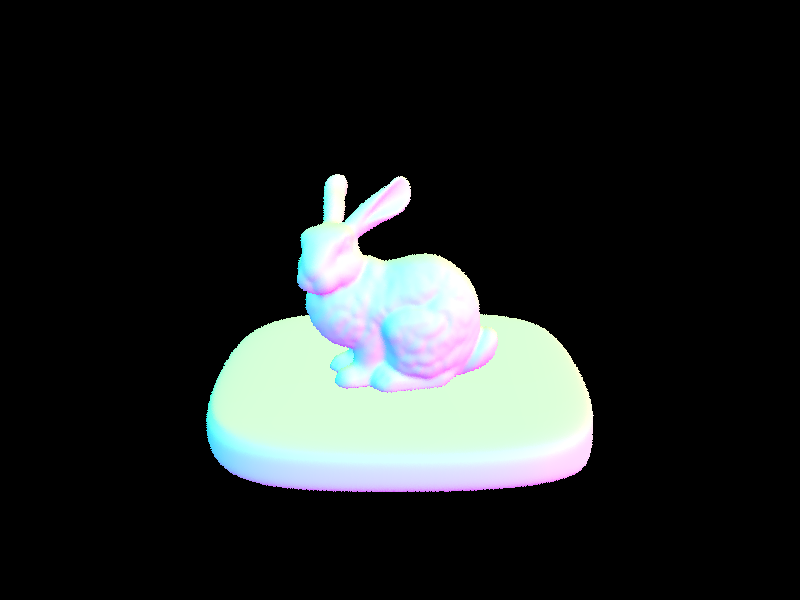
|
|
|
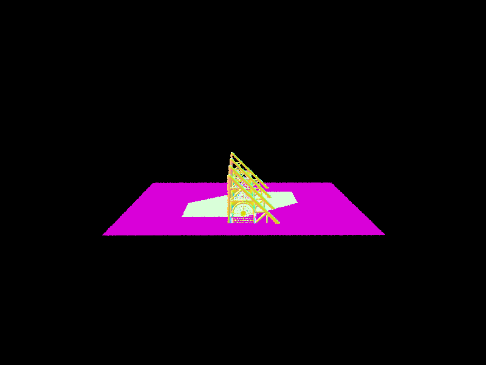
|
|
|
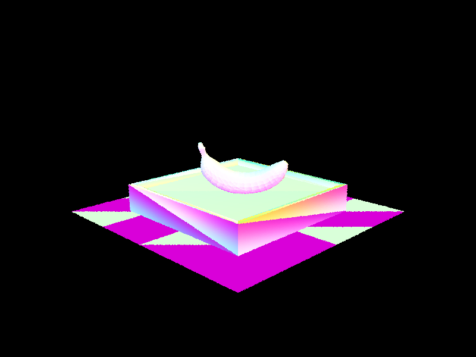
|
Part 2: Bounding Volume Hierarchy
For this part of the assignment, we implemented a bounded volume hierarchy data structure to speed up
the
time required to compute the ray object intersection. The BVH is a tree data structure that contains
a bounding box inclusive of all of its elements and either contains links to left / right BVH sub-trees
or
contains a list of primitive objects (if said list is small enough). The bounding box concept is very
useful
as a ray does not need to run intersection tests with a primitive if said ray does not intersect with
its
bounding box. To construct the BVH you have to recursively subdivide the list of primitive objects into
left and right nodes (while building inclusive bounding boxes for all elements processed) until your
list
of nodes is less than the max leaf size. When this case is met, you just store the pointers to said part
of
the list in your leaf node. The most complex part of BVH construction is determining how to partition
the
list into left and right sections. We used an algorithm where we measured the extent of a given bounding
box
in each dimension (i.e. max_x - min_x, max_y - min_y, max_z - min_z), we then decided to partition the
list
based on the dimension that had the largest difference between max - min. In other words we chose the
longest dimension from every bounding box and split there. We then sorted the list in ascending order
based on each primitive's bounding box centroid values in said dimension and chose the midpoint of the
list to be the split point. This meant that both left and right would be well balanced and
would never be empty (assuming that the total list size >= 2 which would always be the case).
We struggled with many bugs in this implementation and with our BBox intersection implementation that
led to many hours of debugging. We used ChatGPT for assistance in this debugging journey to mixed
results. By far our worst bug was with incorrectly partitioning the sublists used in each BHV left and
right operation. You can read more in the AI acknowledgement section.
Here are images with normal shading, including a few large .dae files that can only be rendered with BVH acceleration.
|
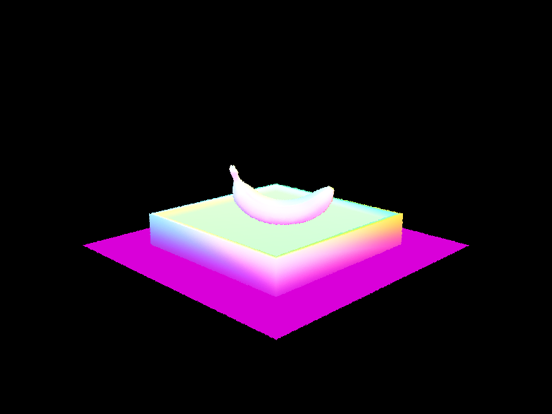
|
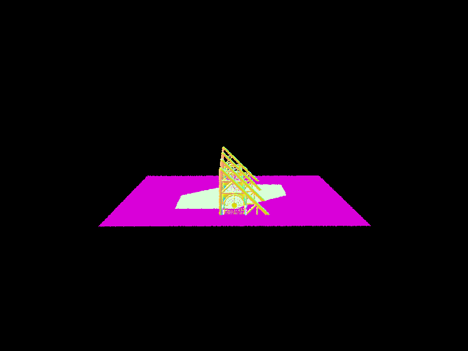
|
|
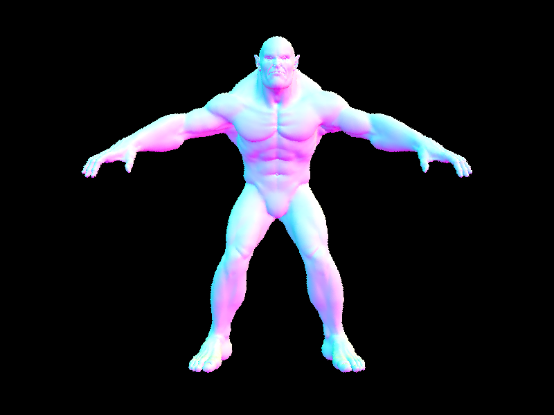
|
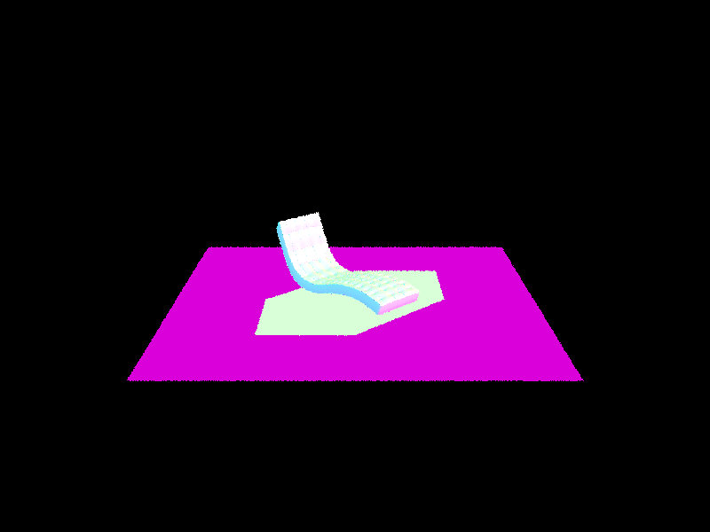
|
|
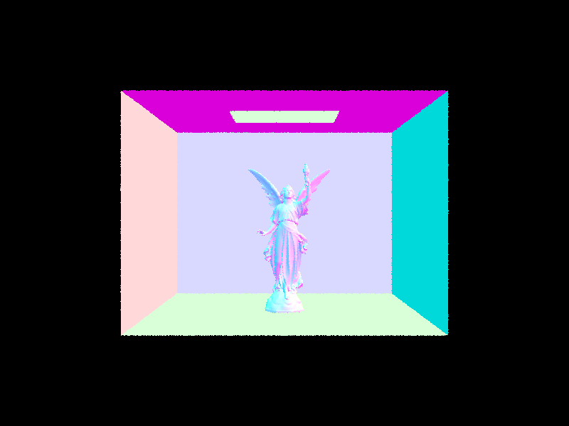
|
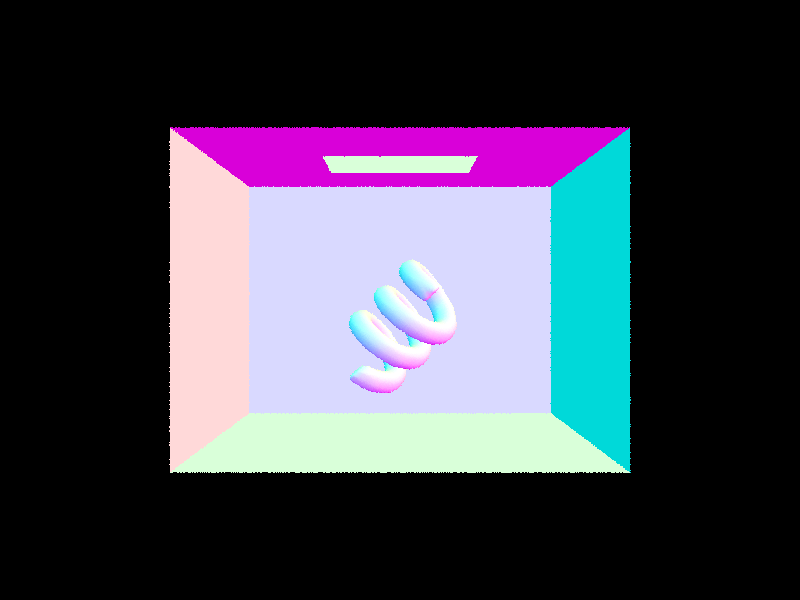
|
|
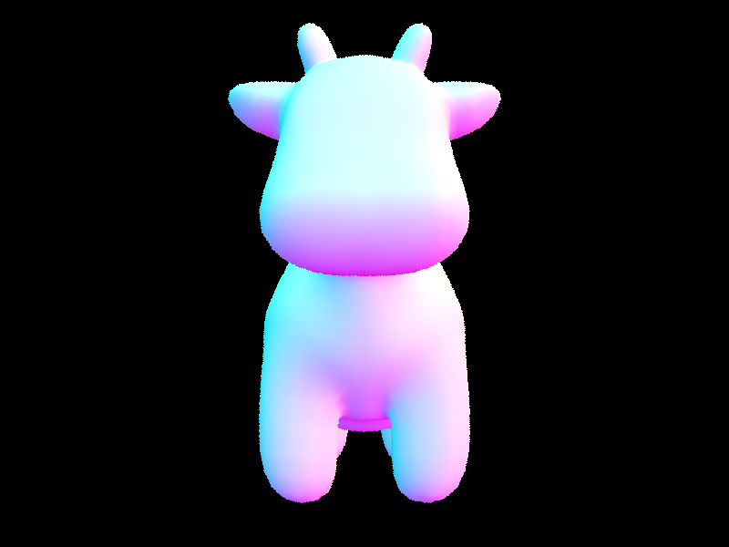
|
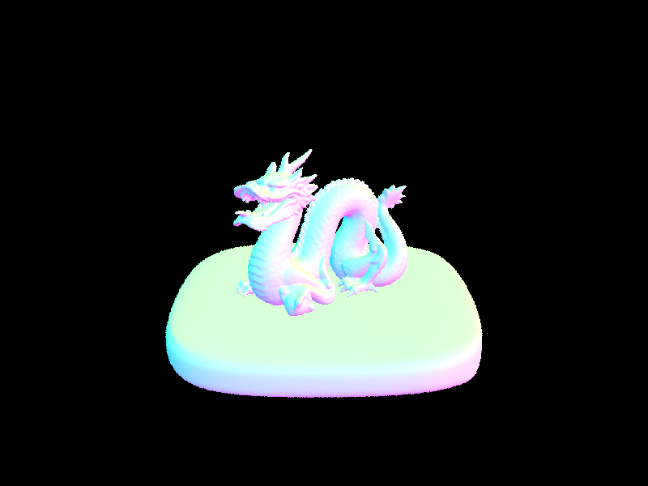
|
|
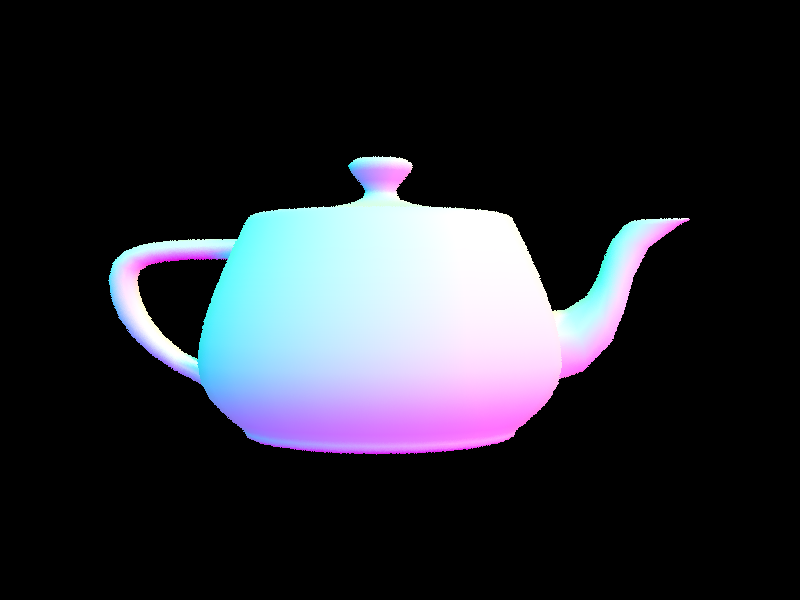
|
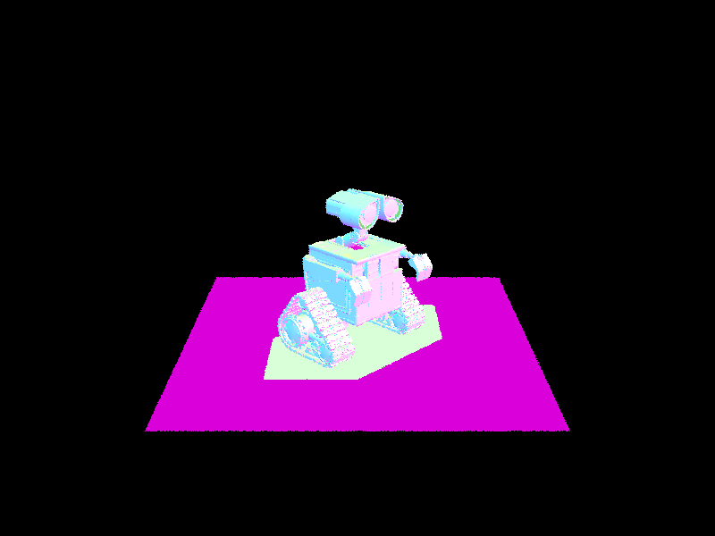
|
Comparing rendering times with and without BVH acceleration:
| Scene | BVH Time (s) | Normal Time (s) |
|---|---|---|
| Cow | 0.0577 | 15.7713 |
| Building | 0.0326 | 116.7138 |
| Banana | 0.0431 | 6.6515 |
| Teapot | 0.0521 | 6.3522 |
| Coil | 0.0660 | 24.3718 |
As you can see above, implementing the BVH radically sped up the time to render scenes using our ray tracing algorithm. The amazing this is that our BVH implementation stayed quite performant even as the number of primitives increased. It did increase slightly, but was far less than a linear relationship (log(n)). On the other hand, you can see that the time to render increased linearly with the naive implementation. This would become a far bigger issue deeper down in the project as the global illuminance code required many, many samples per pixel. Therefore, while this acceleration was very helpful in rendering assets for task 2, it was absolutely critical for rendering some heavier assets (like those in task 4).
Part 3: Direct Illumination (20 Points)
Understanding Both Implementations of Direct Lighting
Rendered Images Using Both Direct Lighting Methods
| Uniform Hemisphere Sampling | Light Sampling |
|---|---|
|
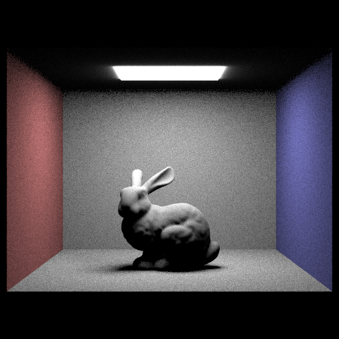
|
|
|
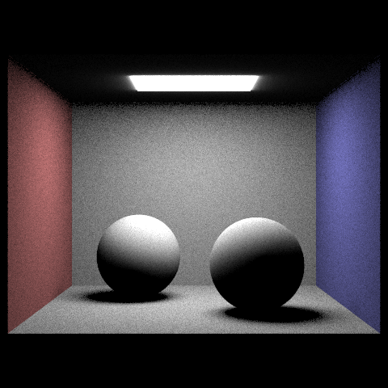
|
|
|
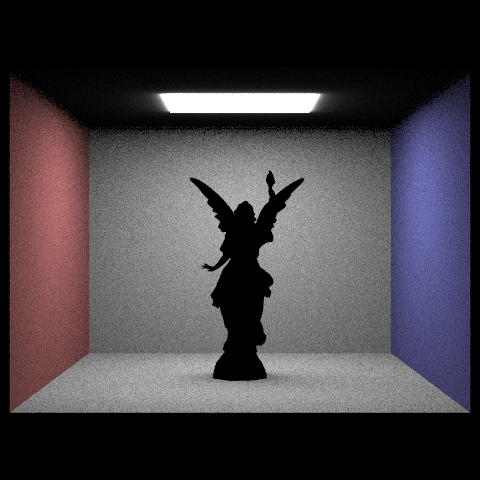
|
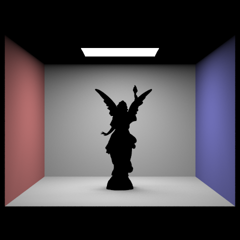
|

|
|
Comparing Soft Shadow Noise in One Scene Using Light Sampling with 1, 4, 16, and 64 Light Rays
|
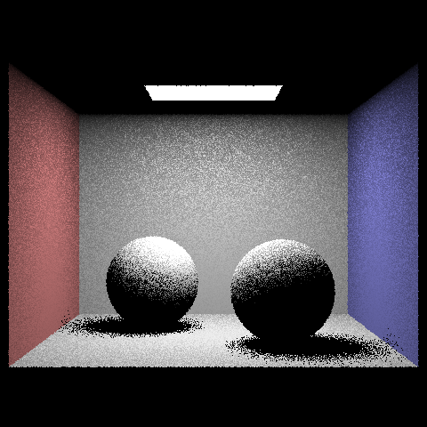
|
|
|
|
In this scene with an area light, as we increase the number of light rays from 1 to 64 (using importance sampling with 1 sample per pixel), the soft shadows become progressively smoother and less noisy. With just 1 ray, the shadows are extremely grainy and undefined. At 4 rays, the shadow edges start to form but remain noisy. By 16 rays, the shadows look much more natural, and at 64 rays, they appear soft and clean with minimal noise—closely matching the expected look of realistic area lighting.
Uniform Hemisphere Sampling vs. Light Sampling
When comparing the rendered images of hemisphere sampling and importance sampling, the difference in visual quality is quite striking. Hemisphere sampling, which distributes rays uniformly across the upper hemisphere, tends to produce images with noticeable graininess—especially in shadowed areas, corners, and surfaces facing away from light sources. Furthermore, using indirect illumination with hemisphere sampling returns results that appear blotchy and take a very large number of samples to converge to something clean. Additionally, point lights are completely missing and contribute no light as can be seen with the banana image rendered with hemisphere lighting. On the other hand, importance sampling focuses its rays toward the directions of actual light sources. As a result, it captures the contribution of direct lighting much more efficiently. The resulting image is significantly smoother, with sharper shadows, brighter highlights, and reduced noise across the entire frame—even with fewer samples. Surfaces that are partially lit or receive bounced light benefit especially from the denser, more relevant sampling directions. In summary, while both methods are unbiased and will eventually converge (in the case of area lights), importance sampling dramatically improves convergence speed and visual clarity, making it much more practical for photorealistic rendering.
Part 4: Global Illumination (20 Points)
Implementation of the indirect lighting function.
Rendering with Global Illumination (1024 spp)
|
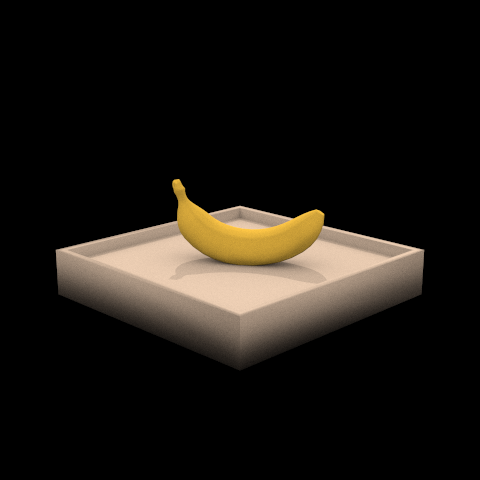
|
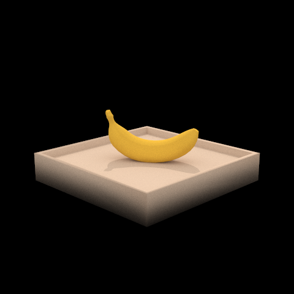
|
|
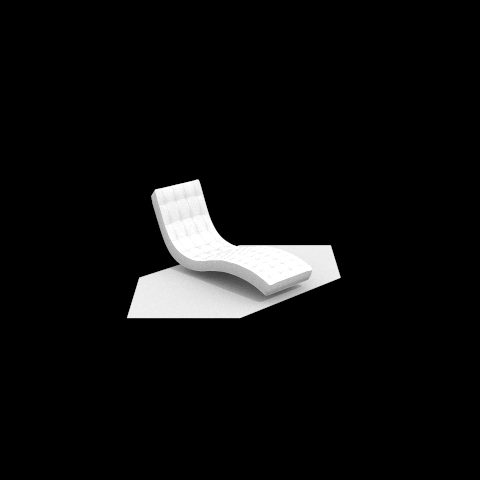
|
|
|
|
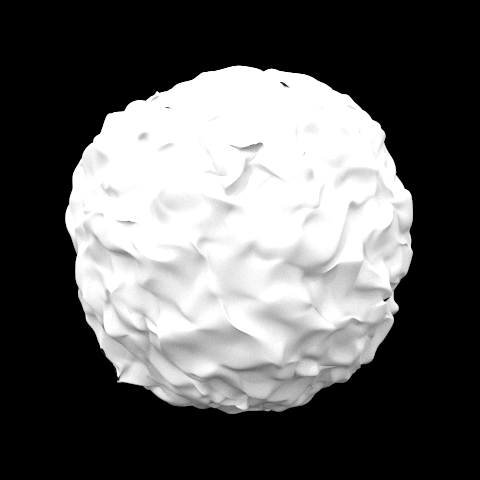
|
|
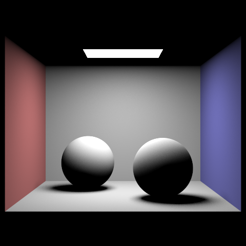
|
|
Direct vs. Indirect Illumination Comparison (1024 Samples per Pixel)
|
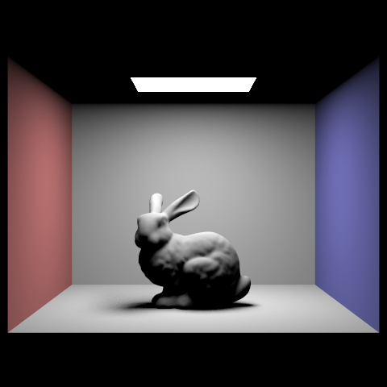
|
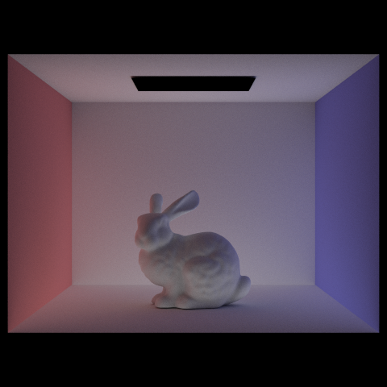
|
In the CBbunny scene shown above, we compare the effects of only direct
illumination (left) and only indirect illumination (right), both rendered with
1024 samples per pixel:
Direct Illumination (Left):
The lighting comes solely from the area light source on the ceiling. This results in sharp, well-defined
shadows under the bunny and strong highlights on surfaces directly facing the light.
However, regions not directly visible to the light (e.g., parts of the bunny facing away from the
ceiling) remain in deep shadow, and there's no visible color bleeding from the red and blue walls.
Indirect Illumination (Right):
Here, the light source itself is blacked out, and all visible lighting comes from secondary
bounces—light that hit other surfaces before reaching the camera.
The shadows are extremely soft, and the scene is generally dimmer, but we observe realistic color
bleeding: the bunny picks up red and blue hues from the adjacent walls.
The illumination is more diffuse, with ambient fill in areas that would be completely dark under only
direct light.
This comparison highlights how indirect illumination is essential for realistic global lighting—it fills in the shadows, simulates interreflection, and contributes to the overall color harmony of the scene.
Comparing CBbunny.dae with Varying max_ray_depth (0 to 100, 1024 spp)
isAccumBounces=True
|
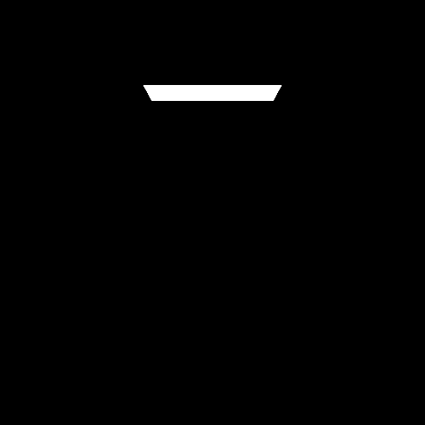
|

|
|
|
|
|
|
|
isAccumBounces=False
|
|
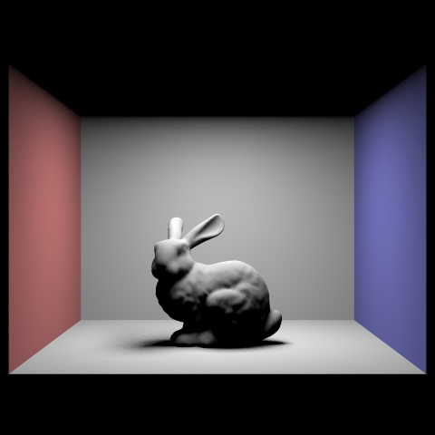
|
|
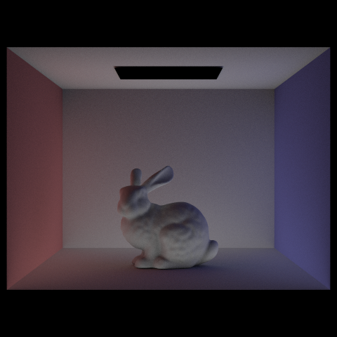
|
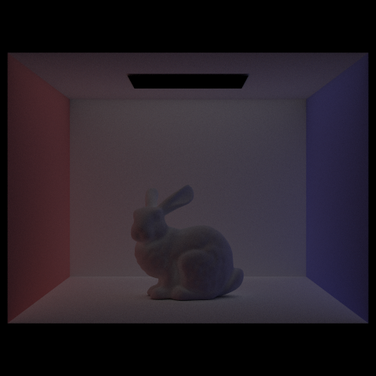
|
|
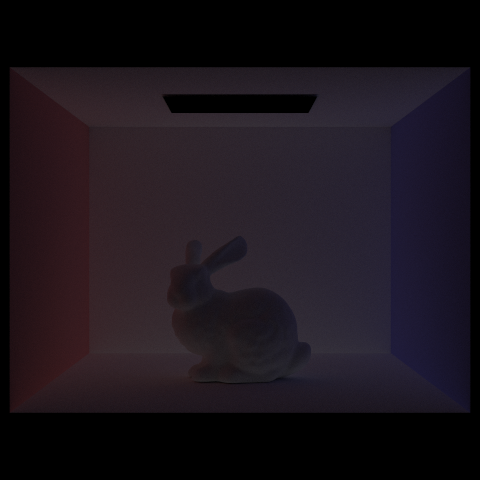
|
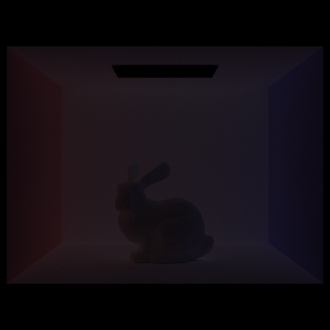
|
For the second and third bounces of light, we observe increasingly subtle and indirect lighting effects that contribute to the overall realism of the scene:
In the second bounce (top left and bottom left images, max_ray_depth = 2),
we begin to see clear color bleeding from the red and blue walls onto the white bunny and surrounding
surfaces.
The corners and shadowed regions also become brighter compared to one-bounce results, as indirect light
has bounced once off another surface.
In the third bounce (top right and bottom right images, max_ray_depth = 3),
the scene becomes even more evenly lit.
Previously darker areas receive more illumination, and the soft indirect shadows under the bunny become
more diffused.
The overall effect is subtle but visible, especially in how the light balances out across the surfaces
and enhances the interreflection between walls and the object.
This progression illustrates how recursive bounces enhance global illumination, capturing complex light behavior like multi-bounce color bleeding and improved ambient fill.
Compared to traditional rasterization-based rendering, which typically uses approximations like ambient occlusion or baked lighting, path tracing with multiple bounces produces much more physically accurate results. It simulates light transport as it naturally occurs in the real world, accounting for indirect lighting, soft shadows, and subtle color blending across surfaces. This greatly improves the realism and visual richness of the final rendered image, especially in complex scenes with occlusion and interreflections.
Russian Roulette Rendering for CBbunny.dae with max_ray_depth = 0 to 100
|
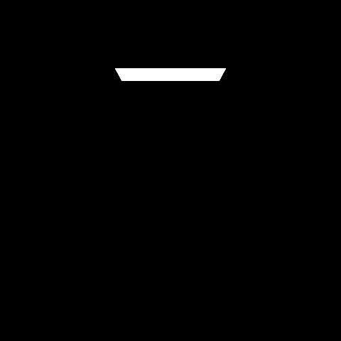
|
|
|
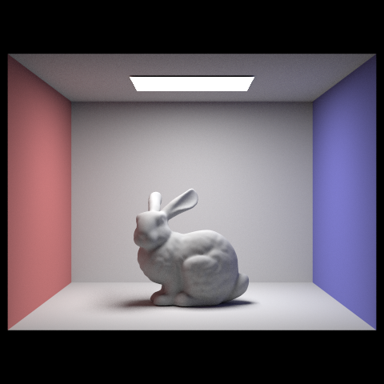
|
|
|
|
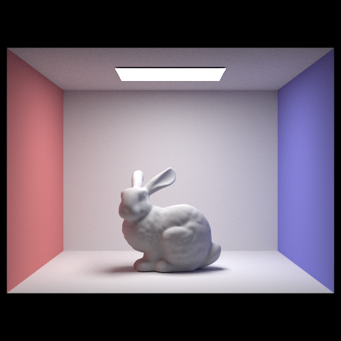
|
To improve rendering efficiency and reduce unnecessary computation in deep light paths, we apply the Russian Roulette strategy during path tracing. This method probabilistically ends low-contributing rays while keeping the overall radiance estimation unbiased.
Russian Roulette helps us avoid tracing every light path to the maximum allowed depth. Instead, we introduce randomness to determine whether to continue or terminate each ray bounce based on a fixed continuation probability. This reduces noise in deeper bounces and balances performance with image quality.
Suppose a ray continues with probability \( q \), and contributes radiance \( L \) when it does. The expected contribution across many such rays becomes:
\( \mathbb{E}[\text{Radiance}] = q \cdot \frac{L}{q} + (1 - q) \cdot 0 = L \)
This approach guarantees that our estimator remains consistent with the physically correct light transport, while allowing us to randomly skip computationally expensive paths that are statistically insignificant.
Rendered One Scene with 1–1024 Samples per Pixel (Using 4 Light Rays)
|
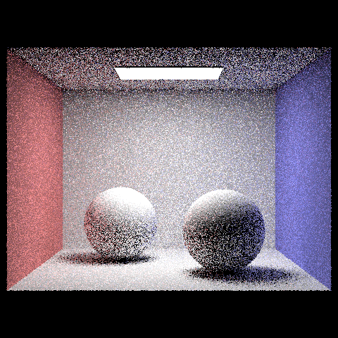
|
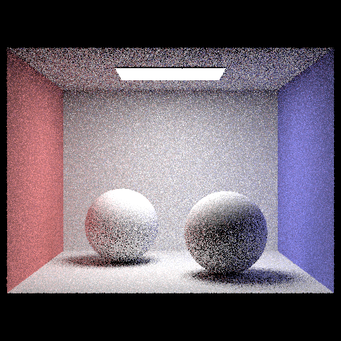
|
|
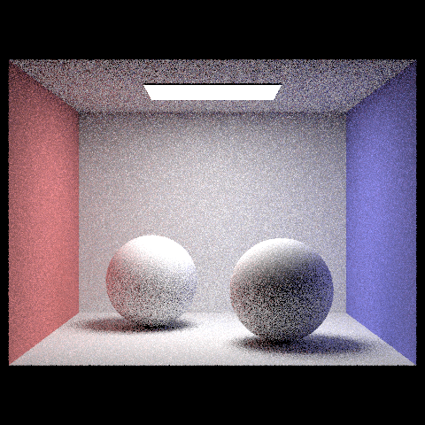
|
|
|
|
|
|
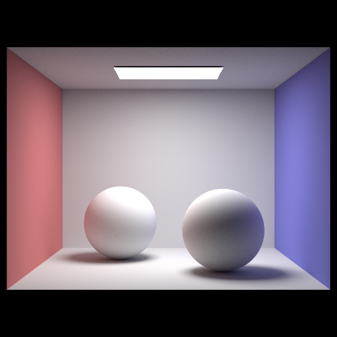
|
Part 5: Adaptive Sampling (20 Points)
Explanation and Walkthrough of Adaptive Sampling Implementation
Adaptive Sampling Comparison on Some Scenes (2048 spp, 1 light sample, depth ≥ 5)
|
|
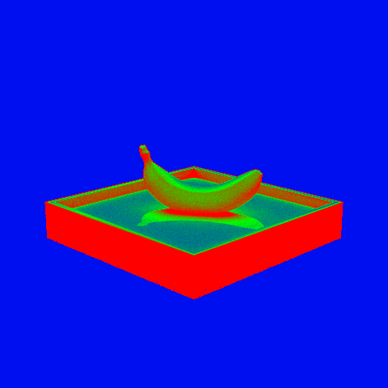
|
|
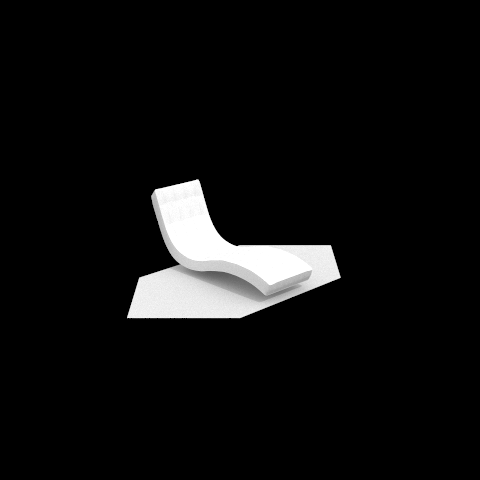
|
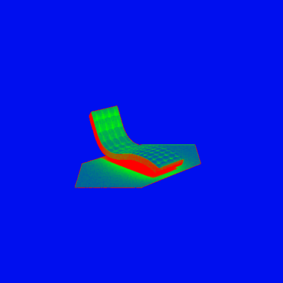
|
|
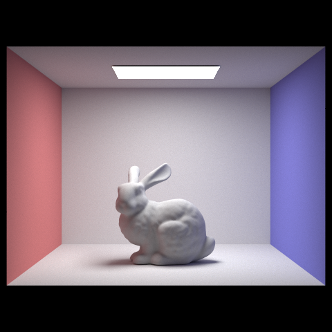
|
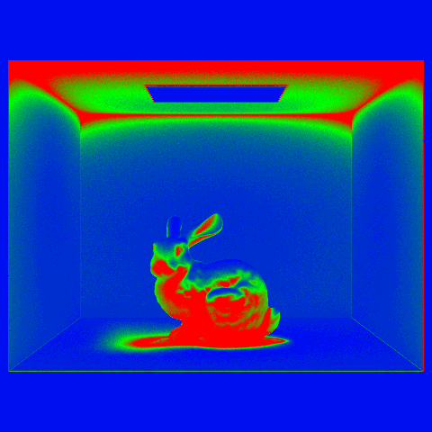
|
|
|

|
|
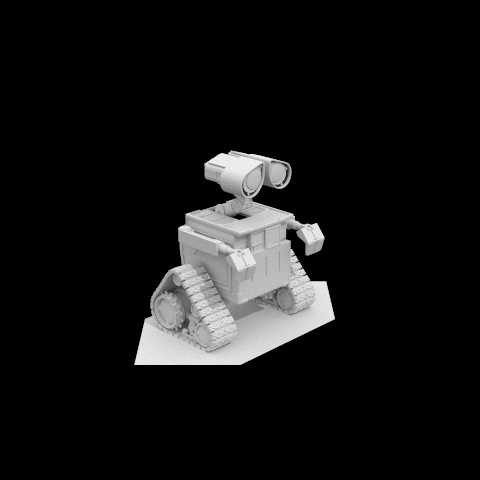
|
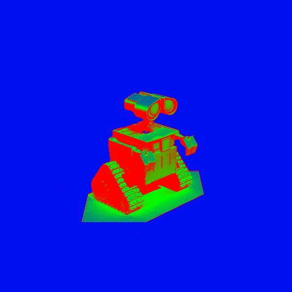
|
Collaboration Experience
We have worked together for all three projects in this class so far and are in the same group for the final project. We have enjoyed working together as both of us are very communicative and hard working. On this project we made the mistake of trying to get to the next task instead of making sure that our previous task was completed in the correct way. This meant that there were several shadow bugs that left our program in a state where it was mostly, but not fully, working. This ended up causing us to have a huge debugging journey because the bugs were harder to isolate as there were more points of failure. This led us to bang our heads against the wall and have a never ending WhatsApp chat for the last 5 days. Thankfully, it all came together yesterday. Below are a few of our debugging experiences, but also refer to the AI acknowledgement to read about our debugging experience for task 2 which was quite a doozy.